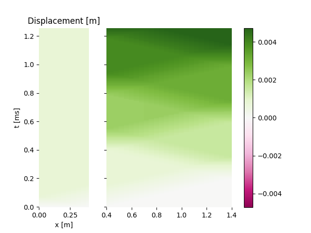

Note
Click here to download the full example code
De Saint Venant displacement diagrams¶
Define a Barhete bar configuration and use it with WP2 reproduce
the displacement diagrams of de Saint Venant in:
de Saint-Venant, A. J. C. B. (1867). Mémoire sur le choc longitudinal de deux barres élastiques de grosseurs et de matières semblables ou différentes, et sur la proportion de leur force vive qui est perdue pour la translation ultérieure; et généralement sur le mouvement longitudinal d’un système de deux ou plusieurs prismes élastiques. Journal de mathématiques pures et appliquées 2e série, 12, 237‑376. https://gallica.bnf.fr/ark:/12148/bpt6k16411c
# sphinx_gallery_thumbnail_number = 4
import numpy as np
from prop1D import WP2, Barhete
import matplotlib.pyplot as plt
Define a few parameters
E = 201e9 # Young modulus [Pa]
rho = 7800 # Density [kg/m3]
d = 0.020 # diameter [m]
k = 2.4 # diamters ratio [-]
Create the bar configurations
bc4 = Barhete([E, E], [rho, rho], [.4, 1.], [d, d], nmin=10)
test2v = WP2(bc4, nstep=160, left='free', right='free', Vinit=10)
test2v.plot('2b_veloc')
![Force [N]](../_images/sphx_glr_plot_6_deSaintVenant_001.png)
![Velocity [m/s]](../_images/sphx_glr_plot_6_deSaintVenant_002.png)
- 
Out:
Setting initial velocity of first segment (Vo=10)
Plot de Saint Venant displacement diagram and compare it with the orignal one. The only difference is that the second bar is at rest, whereas in de Saint Venant it has a velocity smaller than the initial velocity of the impactor.
test2v.plotDeSaintVenant(figname='deStV')
plt.figure('deStV').set_figwidth(10)


Diagram 42, page 277, de Saint Venant¶
Total running time of the script: ( 0 minutes 1.827 seconds)